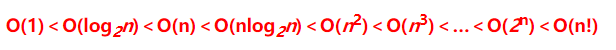

问题(尾部的零)
设计一个算法，计算出n阶乘中尾部零的个数。
举例
例 1:
输入: 11
输出: 2
样例解释: 11! = 39916800, 结尾的0有2个。
例 2:
输入: 5
输出: 1
样例解释: 5! = 120， 结尾的0有1个。
挑战
O(logN)的时间复杂度
开始解题
常见的算法时间复杂度由小到大依次为：
常用的for循环的嵌套是外层是O(n)，内层是n的2次幂。因此遍历的次数要比一次for循环还要小，即要跳跃着遍历参数。
观察到是阶乘，所以看看哪些能用乘法组成10，如图所示：

10是由2和5相乘得到的，而偶数较多，所以只要找5的倍数即可。
算法代码
C++
class Solution {
public:
/*
* @param n: A long integer
* @return: An integer, denote the number of trailing zeros in n!
*/
long long trailingZeros(long long n) {
// write your code here, try to do it without arithmetic operators.
if (n == 0)
{
return 1;
}
if(n > 0 && n < 5)
{
return 0;
}else{
return (n/5 + trailingZeros(n/5));
}
}
};
Python
class Solution:
"""
@param: n: An integer
@return: An integer, denote the number of trailing zeros in n!
"""
def trailingZeros(self, n):
# write your code here, try to do it without arithmetic operators.
if n == 0:
return 1;
x = 0
while n > 5:
x += n // 5
n = n // 5
return x